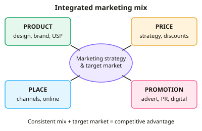

A-level Business Year 12 · Topic 5
Marketing mix and marketing strategy
This topic shows how a business turns its marketing objectives into a plan, using the marketing mix.
We look at product design and branding, the product life cycle and the Boston Matrix, and the choices for price, promotion and place.
We finish with digital marketing, and how firms use customer data to win and keep customers.
- 8 subtopics
- 266 questions
- Free: 5.1 notes and 10 questions
In this topic
- 5.1The marketing mix and marketing strategy: integrating the mix and building competitive advantageFree below · 30 questions
- 5.2Product and service design, differentiation, innovation, USP and brandingOpen in Full Marks · 31 questions
- 5.3The product life cycle and extension strategiesOpen in Full Marks · 23 questions
- 5.4Product portfolio analysis: the Boston MatrixOpen in Full Marks · 24 questions
- 5.5Pricing strategies: penetration, skimming, cost-plus, competitive, psychological and othersOpen in Full Marks · 33 questions
- 5.6Promotion: methods, promotional mix and brandingOpen in Full Marks · 27 questions
- 5.7Place: distribution channels and retail and wholesale decisionsOpen in Full Marks · 28 questions
- 5.8Digital marketing, e-commerce, social media and using data and CRM in marketingOpen in Full Marks · 70 questions
5.1 · Free notes
The marketing mix and marketing strategy: integrating the mix and building competitive advantage

Key points
- The marketing mix is the combination of product, price, promotion and place (the 4Ps) used to meet customer needs and achieve marketing objectives. Services often add people, process and physical evidence (7Ps).
- Marketing strategy is the long-term plan for achieving marketing objectives, such as entering a new market or raising market share. Marketing tactics are the shorter-term actions, such as a price promotion or an advertising campaign.
- Marketing objectives must support the corporate objectives and should be SMART. An example is 'raise UK market share from 8% to 10% within two years'.
- Integration means all four Ps are consistent with each other and with the target market and positioning. A premium product with a high price, selective distribution and prestige promotion is consistent. A premium product sold at a discount in a convenience store is not.
- Market share (%) = (firm's sales ÷ total market sales) × 100. Sales can rise while market share falls if the whole market grows faster.
- Competitive advantage is something that lets a firm outperform rivals. It usually comes from cost leadership (low prices from low costs) or differentiation (unique features or brand that justify a higher price). It is more sustainable if rivals find it hard to copy.
- Segmentation, targeting and positioning (STP) come before the mix. Firms may pursue mass marketing or niche marketing, and the mix is tailored to the chosen segment.
- A market-orientated firm starts with market research and designs the mix around customer needs. A product-orientated firm makes the product first and then tries to sell it, which is riskier.
- The best mix depends on the type of product (e.g. B2B relies on personal selling, B2C on advertising), budget, competitors, stage of the product life cycle and technology. Digital marketing has changed place (online sales) and promotion (social media).
- In evaluation, judge mix success by sales, market share, profit and brand image. Support points with context, such as the size of the firm, the market and the budget. Argue which P is most important for that business rather than listing all four.
In more detail
- Integrated mix example: a premium watch brand uses top-quality materials (product), a high price (price), glossy adverts and sponsorship (promotion) and exclusive stores (place).
- Mismatch example: a luxury brand sold in discount shops sends a confused message, which damages its image and its ability to charge premium prices.
- Ansoff link: market penetration (existing products in existing markets) is the lowest-risk strategy, while diversification (new products in new markets) is the highest.
- The 7Ps for services: services add people, process and physical environment, e.g. friendly staff, a fast checkout and a clean restaurant.
Practice
The marketing mix and marketing strategy: integrating the mix and building competitive advantage: 10 questions
Pick an answer to check it, or open the answer for the explanation.
1. Which of the following is one of the traditional four Ps of the marketing mix?
- Physical evidence
- Place
- People
- Process
Show answer
B: Place. The original 4Ps are product, price, promotion and place. Process, people and physical evidence are the extra Ps added for services (7Ps).
2. Which statement best describes a marketing strategy rather than a marketing tactic?
- Changing the price of one product on one day
- A two-week 20% discount on a snack bar
- A long-term plan to enter the Asian market over five years
- Posting a competition on social media this Friday
Show answer
C: A long-term plan to enter the Asian market over five years. Strategy is the long-term, overall plan for achieving marketing objectives. The others are short-term actions, which are tactics.
3. A luxury watchmaker starts selling its range at low prices in a discount supermarket. What is the main problem with this?
- Place is not part of the marketing mix
- The mix is inconsistent with the brand's premium positioning
- The product is too cheap to make
- Supermarkets cannot sell watches
Show answer
B: The mix is inconsistent with the brand's premium positioning. A premium product needs a consistent mix of price, place and promotion. Discount pricing and place undermine the brand image and the differentiation.
4. A firm has sales of £12m in a market worth £80m. What is its market share?
- 6.7%
- 20%
- 15%
- 12%
Show answer
C: 15%. Market share = 12 ÷ 80 × 100 = 15%. The 6.7% option comes from dividing the wrong way round.
5. Sales rise from £9m to £10.5m while the total market grows from £60m to £70m. What happens to the firm's market share?
- It rises from 15% to 17.5%
- It rises from 15% to 16.7%
- It falls from 17.5% to 15%
- It stays at 15%
Show answer
D: It stays at 15%. 9/60 = 15% and 10.5/70 = 15%. Sales grew in line with the market, so the share is unchanged despite higher sales.
6. Which of the following is an example of a differentiation strategy?
- Cutting costs to offer the lowest price in the market
- Selling identical products to rivals at the same price
- Offering a unique design and strong brand so customers pay a premium
- Copying a competitor's product exactly
Show answer
C: Offering a unique design and strong brand so customers pay a premium. Differentiation means offering something distinctive, such as features, design or brand, so that customers will pay more. Low-cost leadership is the alternative strategy.
7. Which is the best example of a marketing objective?
- Reduce unit costs by 5%
- Increase market share from 8% to 10% within two years
- Recruit 20 more production staff
- Raise £2m in new share capital
Show answer
B: Increase market share from 8% to 10% within two years. A marketing objective relates to the market, such as share, sales or brand awareness. The other options are operational, HR and finance objectives.
8. What is the key feature of a market-orientated business?
- It only sells to other businesses
- It never changes its product
- It develops products first and then looks for buyers
- It bases product and mix decisions on market research into customer needs
Show answer
D: It bases product and mix decisions on market research into customer needs. Market-orientated firms research customer needs first and design the mix around them. A product-orientated firm makes the product first.
9. The growth of online-only retailing most directly changes which element of the marketing mix?
- Product design only
- Production methods
- Place (distribution channels)
- Legal form
Show answer
C: Place (distribution channels). Selling online alters how and where goods reach customers, which is place or distribution. It also affects promotion, but place is the most direct change.
10. Which promotional method is typically MOST important for a firm selling machinery to other businesses (B2B)?
- Billboards on motorways
- Mass television advertising
- Personal selling and trade shows
- Celebrity endorsement
Show answer
C: Personal selling and trade shows. B2B products are often complex and high-value with few buyers. Personal selling, trade shows and relationship building are more cost-effective than mass media.
Keep going in Full Marks
Full Marks has 30 questions on The marketing mix and marketing strategy: integrating the mix and building competitive advantage (20 more than here), set out in practice levels. You also get notes and 3D models for all 8 subtopics of Marketing mix and marketing strategy, plus games, timed exams and past papers.